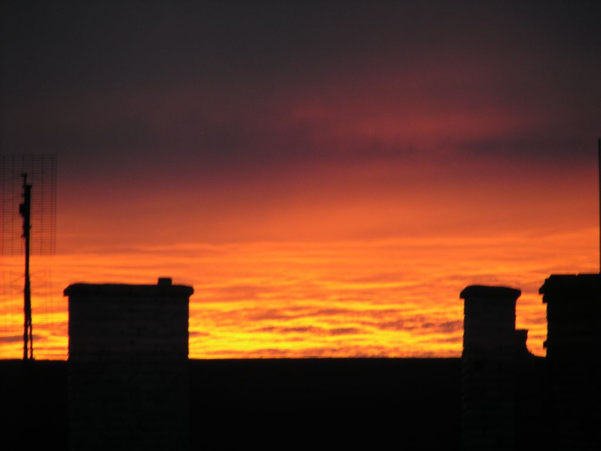
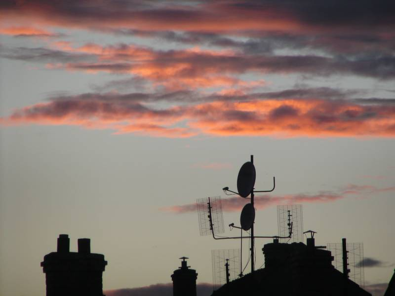

Jsou knížky, na které musí být nálada, abyste je pořádně docenili. Grandhotel k nim patří. Jeho podtitul “román nad mraky” docela trefně vystihuje, že člověk se musí při čtení zkusit podívat na život a na všechno, co přináší, trochu jinak…z výšky…
“Někdy mám pocit, že právě tady přímo nad námi nebe krvácí. Ale možná to je jen západ slunce…”

Někdy mám pocit, že právě tady přímo nad námi nebe krvácí…
Hlavní postavou románu je třicetiletý samotář Fleischman, pro většinu lidí zaostalý exot pohybující se ve světě mraků a tlakových výší, ve svém nitru ale opuštěný a nepochopený snílek hledající cestu ven ze svého rodného města, ve kterém se cítí uvězněn. Právě Fleischmanův netypický pohled na život vnáší do příběhu jakousi zvláštní, někdy smutnou, jindy komickou poetiku. Fleischman jakoukoliv životní situaci dokáže pohotově vyhodnotit a přitovnat k jediné oblasti, které skutečně rozumí - a sice k počasí :-). Jeho životu dává řád meteorologický graf a postupem času i Franz, starý sudetský Němec, který jezdí do Liberce pohřbívat své spolužáky. Při pozorování oblohy z Grandhotelu na Ještědu Fleischman konečně zjišťuje, že jediná cesta, kterou může z Liberce uniknout a zvítězit tak sám nad sebou, vede skrz mraky. Fleischmanův plán ale lehce nabourává servírka Ilja, která se jednoho dne objevuje v hotelové recepci…
“Jestli je to tak, pak láska je něco jako blesk. Protože každý blesk, který se spouští z nebe a je vidět, má svého bratra, který vidět není, neviditelný protiblesk, který mu v ten samý okamžik vyjíždí ze země naproti. A když se ty dva blesky setkají, tak to zajiskří. Zasvítí. A pak to taky pěkně bouchne.”
Podle námětu knihy vznikl scénář pro film Davida Ondříčka Grandhotel, a tak možná řada z vás ví, jestli se Fleischmanovi nakonec podaří vznést “nad mraky” nebo ne. Podle mě ale filmový Grandhotel kvalit knížky ani zdaleka nedosahuje, protože některé myšlenky a pocity se zkrátka na plátno převádějí jen těžko. Ty nejkrásnější jsem pro vás vybrala jako úryvky…

Lidé jsou jako mraky…
"…lidé jsou jako mraky…taky se tak proplítaj…ztrácej…opouštěj…nacházej…"
Grandhotel jsem četla už dvakrát. Fotky z tohoto článku vznikaly v létě, kdy se mi Rudišova knížka dostala do rukou poprvé a já zjistila, že má v sobě ukrytou jakousi zvláštní, ale příjemnou nostalgii, která člověka přiměje pozvednout oči vzhůru a fascinovaně koukat na nebe. Možná to pro vás bude dobrý důvod, abyste po ní taky sáhli a nechali se unést někam vysoko nad mraky…